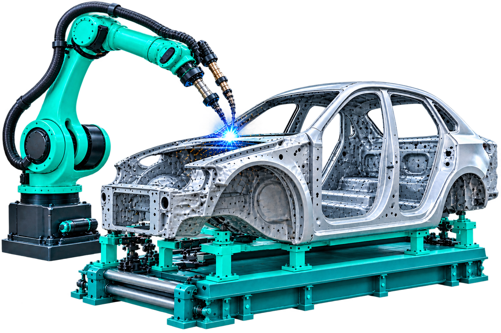
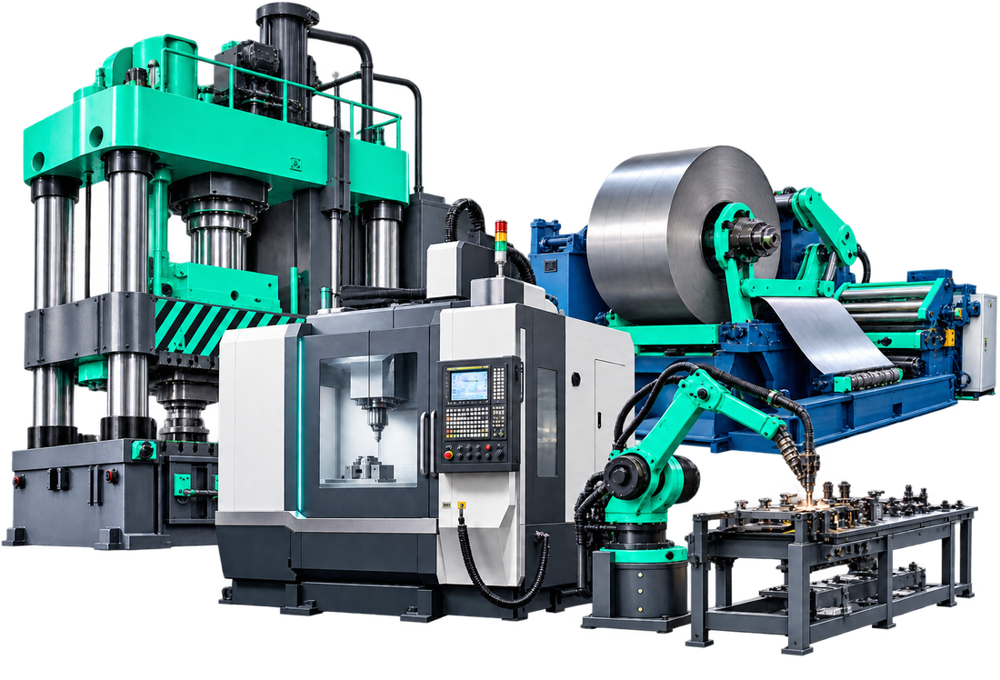
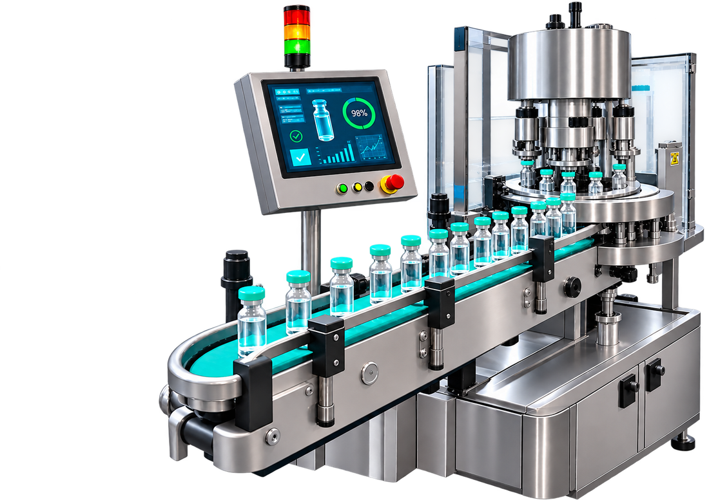
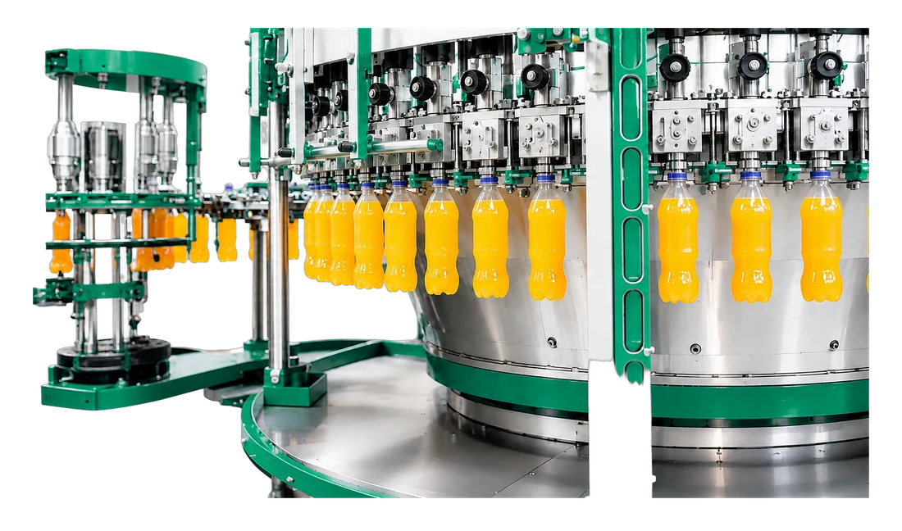
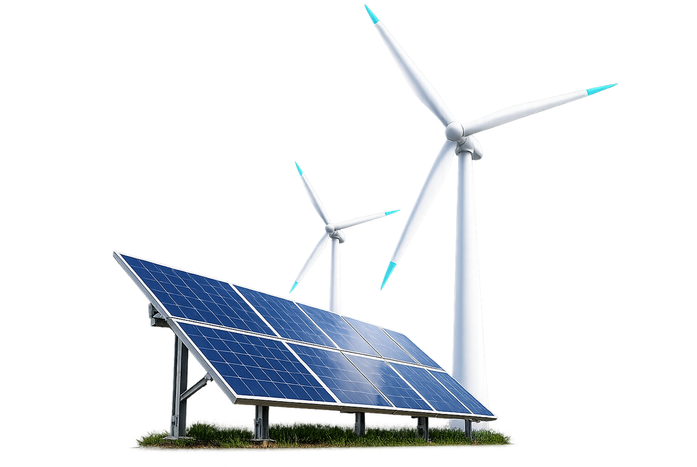
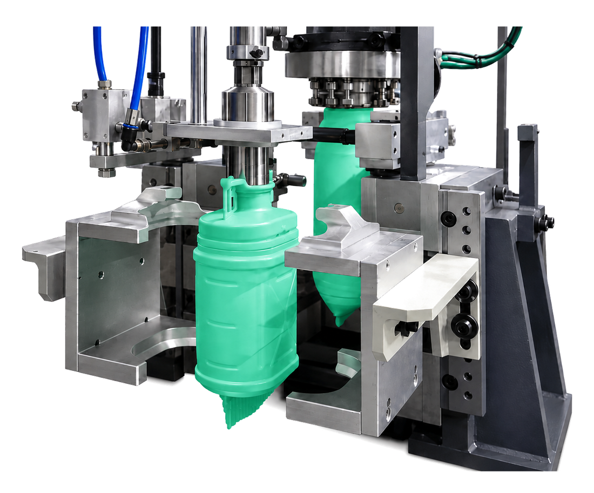

Built for discrete and
process manufacturing
From automotive lines to process plants, shaped to how your industry runs: your constraints, your compliance, your uptime.
Every sector. One platform, shaped to each
Automotive & Tier-1
Takt time leaves no room to inspect later. Cameras watch each station as the part moves, the result is stamped against the serial, and a station that starts drifting is flagged before it fills a rework bay.

Heavy Machinery
Big assets, many makes, several sites, and no two controllers speaking the same language. Every machine reports into one layer, so utilisation, load and health read the same way whether the asset arrived last year or twenty years ago.

Pharma
Batch records that reconstruct themselves, parameters logged as they happen, and a quality trail nobody has to assemble the week before an inspection. Access is controlled and every change keeps its author and timestamp.

Food & Beverage
Changeovers, wash-downs and short shelf life squeeze the run time you have. Line speed, giveaway and downtime reasons sit side by side, so a decision about throughput is never made blind to what it costs in waste or compliance.

Power & Energy
When an asset cannot come down unplanned, vibration, temperature and electrical signature are watched continuously rather than on a walk-round. The point is a week of warning, not a record of the failure.

Metal Fabrication
Cycle time is the easy number. The time that actually disappears goes into setup, first-off approval and scrap after a tool change. All three are measured, per job and per operator, so improvement has somewhere to aim.
Warehousing & Logistics
Stock counts drift the moment a move goes unrecorded. Scans, gate events and dock activity feed one picture, so what the system believes and what is on the floor stay the same number.
Plastics & Moulding
Quality lives in parameters that shift quietly: melt temperature, hold pressure, cooling. Shot data is captured per cavity and read against the last good run, so a drift shows up as a trend instead of a bin of short shots.

Deploy the same, adapt to each
Connect, understand and act the same way on every floor, then tune the dashboards, KPIs and rules to your industry's realities.
- Any machine, any age
See legacy and modern equipment on one live view.
- Compliance-ready
Keep audit trails and validated records where regulation demands.
- Scales site to site
Start on one line, roll out across plants from one source of truth.
Different industries,
the same wins
Discrete or process, high-mix or high-volume, the levers are the same: see more, lose less, prove quality.
See everything
Put every asset, line and plant on one live view, with no manual logging.
Less downtime
Surface reason-tagged stops and eliminate them for good.
Prove quality
Inspect inline and keep traceable, audit-ready records.
Connect your stack
Feed live data into the ERP, MES and BI you already run.
Built for your industry
Tell us your sector and use case, and we'll tailor the demo to your floor.